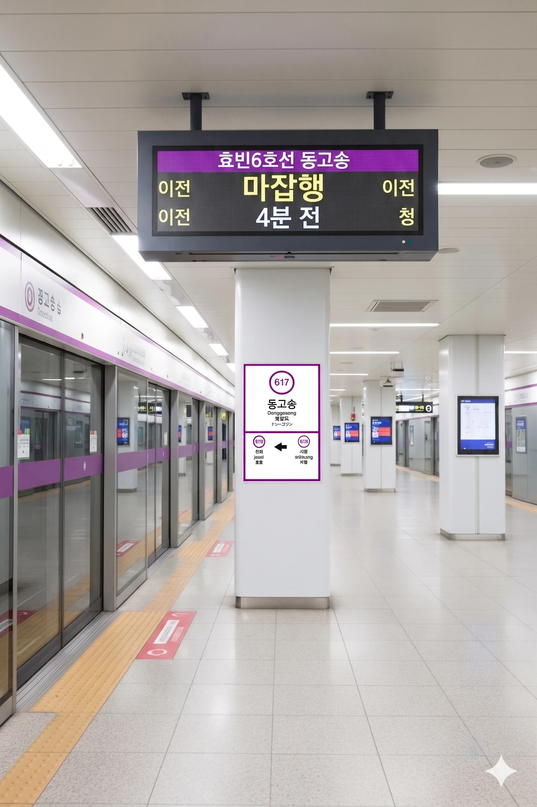

1. 개요
효빈 도시철도 6호선 617번. 효빈광역시 북구 고송동 345 지하 소재. 단일 법정동 기준 효빈시 인구 1위(약 23만 명)를 자랑하는 거대 법정동인 고송동의 동쪽 권역(주로 고송7동·고송8동 및 인접한 청능동 경계)에 위치하여 붙여진 이름이다.
역 자체는 고송7동과 고송8동의 대단지 아파트 숲 한복판에 자리 잡고 있으나, 역에서 불과 296m 떨어진 고송천 수변을 따라 효빈애니메이션본부(HAH)가 직할하는 초거대 서브컬처 성지인 효빈애니메이션 박물관 & 고송 애니메이션 아카이브와 국립디지털미디어·게임박물관, 그리고 크로스비트 아카데미가 연달아 포진해 있어 평일과 주말의 승객 분위기가 180도 달라지는 이중적인 매력을 지닌 역이다.
2. 역 정보
고송대로를 따라 지하 3층 규모로 지어졌다. 서쪽의 고송역이나 고송교차로역이 백화점과 거대 서브컬처 상가가 밀집한 화려한 상업의 중심지라면, 동고송역은 기본적으로 고송강변공원(역에서 296m 거리)을 끼고 있는 차분하고 쾌적한 고밀도 주거 지구 및 교육·문화 특구의 이미지를 담당한다. 역세권 주민들의 강변 산책 코스 시작점이자 전국 덕후들의 오픈런 출발선
역사 내부 디자인 역시 이러한 지역적 특성을 반영해 꽤나 독특한데, 지하 1층 맞이방의 절반은 고송강변공원의 물결과 수변 생태계를 형상화한 차분한 파스텔 톤 타일로 마감되어 있는 반면, 3·4번 출구로 이어지는 북동쪽 통로는 효빈애니메이션 박물관 및 국립디지털미디어·게임박물관으로 향하는 관람객들을 위해 6호선 마스코트 라세나를 비롯한 레일루미네 캐릭터들의 초대형 LED 미디어월과 역대 HAF(효빈 애니메이션 페스티벌) 공식 포스터 갤러리로 꾸며져 있다. 이 때문에 아파트 주민들은 장바구니를 들고 미디어월 속 미소녀 캐릭터들과 자연스럽게 눈을 마주치며 지나가는 진풍경이 매일같이 연출된다(...).
또한 역 남서쪽으로는 청능동과도 맞닿아 있어, 3호선 청능역까지는 다소 거리가 있는 청능동 동북부(청능주공아파트, 철도사원 1차 아파트 등) 주민들에게도 소중한 6호선 접근 루트 역할을 톡톡히 해내고 있다.
3. 역 주변 정보
동고송역 역세권은 크게 ① 고송7·8동 및 청능동의 대단지 아파트 주거벨트, ② 고송천 수변과 맞닿은 고송강변공원 힐링벨트, 그리고 ③ 전국 서브컬처 팬들과 창작 지망생들의 심장부인 박물관·아카데미 문화벨트라는 3대 축으로 완벽하게 요약된다.
3.1. 출구 정보
 동고송역 출구 정보
동고송역 출구 정보
|
||
|---|---|---|
| 번호 | 주요 시설 및 방향 | 비고 |
| 1 | 고송코아루아파트 (북구 고송8동·7동 [고송동]), 효빈고송7동우체국, 고송8동 스퀘어시티 상가 방면 | 우체국·주거 밀집 |
| 2 | 동고송역 푸르지오 아파트 (북구 고송7동 [고송동]), 크로스비트 아카데미 (사단법인 효빈만화애니메이션협회 위탁 / 북구 고송동) | 만화·애니 교육특구 |
| 3 | 고송강변공원 (도보 약 296m), 효빈애니메이션 박물관 본관, 고송강변아파트 (북구 고송7동 [고송동]), 고송7동 행정복지센터, 유로초등학교, 포레나 고송아파트 | 박물관 본관·공원 직결 |
| 4 | 고송 애니메이션 아카이브 (박물관 별관), 국립디지털미디어·게임박물관, 고송강변아파트 (북구 고송7동 [고송동]) | 아카이브·게임박물관 |
| 5 | 두산위브 고송아파트 (북구 고송8동·7동 [고송동]), 청능주공아파트 (북구 청능동 [청능동]), 철도사원 1차 아파트 (북구 청능동 [청능동]), 고송여자고등학교 | 학군 및 청능동 경계 |
3.2. 주요 역세권 시설 상세
- 박물관 효빈애니메이션 박물관 & 고송 애니메이션 아카이브 (3·4번 출구): 동고송역의 알파이자 오메가. 2000년 7월 10일 고송천변(북구 고송동 4)에 개관한 본관과, 2023년 탁민석 이사장 체제에서 증축된 거대 수장고 겸 심화 전시관인 '고송 애니메이션 아카이브(고송동 39-7)'로 이루어진 대한민국 유이(唯二)의 애니메이션 박물관이자 글로벌 서브컬처의 발할라다. 3·4번 출구로 나와 고송천 수변 산책로를 따라 도보 5분이면 도착한다. 1전시관 '레일루미네 스테이션'부터 한국·글로벌 애니메이션 연대기, BanG Dream! 및 러브라이브! 성우 실착 의상이 박제된 제10전시관(B-Project & L-Project 특별관), 오타쿠 공무원들이 부인 몰래 기증한(...) 희귀 굿즈가 모인 제13전시관, 그리고 공항 출입국 심사 수준의 3중 보안(신분증 스캐너+안면 인식+지문 대조)을 통과해야 들어갈 수 있는 전설의 제5전시관 '심연의 성역(R-18 특별구역)'까지 총 14개의 광기 어린 전시관을 자랑한다. 특히 목·금요일 오전 신상 한정판 굿즈가 입고되는 제14전시관 굿즈샵 '오토노키자카' 오픈런 날에는 동고송역 첫차부터 캠핑 의자와 닌텐도 스위치를 든 덕후들이 쏟아져 나온다.
-
박물관 국립디지털미디어·게임박물관 (4번 출구):
효빈애니메이션 박물관 아카이브 별관 바로 옆에 나란히 건립된 국립 박물관이다. 초기 아케이드 오락실 기판부터 현대의 e스포츠 역사, 한국 온라인 게임의 연대기, 그리고 서브컬처 모바일 가챠 게임의 디렉팅 역사까지 총망라하고 있다.
가챠 확률의 매운맛을 학술적으로 체험할 수 있는 시뮬레이터 코너에서 관람객들의 탄식이 끊이지 않는다.효빈애니메이션 박물관과 함께 '동고송 2대 서브컬처 뮤지엄 투어' 코스로 묶여 주말마다 엄청난 관람객을 끌어모은다. - 문화/교육 크로스비트 아카데미 (2번 출구): 사단법인 효빈만화애니메이션협회가 효빈광역시로부터 위탁받아 운영하는 전문 창작자 양성 기관(북구 고송동 소재)이다. 웹툰 작가, 셀·디지털 애니메이터, 서브컬처 일러스트레이터, 성우 더빙 및 사운드 디렉터 과정을 전문적으로 교육하며, 현업 일류 강사진과 효빈애니메이션본부의 빵빵한 장비 지원 덕분에 전국 만화·애니 지망생들 사이에서는 '입학만 하면 데뷔하는 성골 사관학교'로 통한다. 밤늦게까지 타블렛 펜을 굴리다 막차를 타러 동고송역 2번 출구로 걸어 나오는 수강생들의 모습은 이 역의 일상적인 풍경이다.
- 공원 고송강변공원 (3번 출구, 역에서 296m): 동고송역 3번 출구에서 정확히 296m 떨어진 고송천 수변을 따라 길게 조성된 대형 친수 공원이다. 평소에는 고송7·8동 아파트 주민들의 평화로운 조깅 및 강아지 산책 코스지만, 봄철 벚꽃 시즌과 가을 단풍철, 그리고 주말만 되면 아카이브 별관 1층 무료 탈의실에서 환복을 마친 전국 코스플레이어들의 야외 촬영 성지로 변모한다. 산책 나온 유로초등학교 아이들과 화려한 복장의 코스어들이 자연스럽게 인사를 나누는 효빈시다운 풍경이 펼쳐지는 곳이다.
- 우체국 효빈고송7동우체국 (1번 출구): 1번 출구 인근 고송코아루아파트 상권 옆에 위치한 우체국. 평범한 동네 우체국 같지만, 인근 효빈애니메이션 박물관 굿즈샵이나 애니플러스샵 고송본점에서 양손 무겁게 한가득 지른 타 지역 원정 덕후들이 "이거 들고 기차 못 탄다"며 현장에서 바로 집으로 택배를 부치러 몰려드는 바람에, 전국 우체국 중 주말 직전 금요일 오후 및 월요일 오전 소포 접수량이 기형적으로 높은 곳으로 유명하다. 우체국 직원들이 피규어 박스 파손 방지를 위한 에어캡(뽁뽁이) 포장 장인이라는 소문이 자자하다.
- 아파트 대규모 배후 주거단지 (고송7·8동 및 청능동): 역 주변으로 고송코아루(북구 고송8동·7동 [고송동]), 고송강변(북구 고송7동 [고송동]), 동고송역 푸르지오(북구 고송7동 [고송동]), 두산위브 고송(북구 고송8동·7동 [고송동]), 포레나 고송 등 고송신도시 동부권의 핵심 브랜드 아파트들이 병풍처럼 둘러싸고 있다. 여기에 5번 출구 남쪽 경계를 넘어가면 북구 청능동 소속인 청능주공(북구 청능동 [청능동])과 철도사원 1차(북구 청능동 [청능동]) 아파트 단지까지 역세권에 포함되어 있어 흔들림 없는 고정 통근·통학 수요를 만들어낸다. 특히 '철도사원 1차 아파트'는 과거 효빈교통공사(구 효빈지하철공사) 및 철도청 재직 사원들의 사택 조합으로 지어진 유서 깊은 단지라, 동고송역 역무원들이 가장 긴장하며 근무한다는(?) 우스갯소리가 있다.
4. 일평균 이용객
|
동고송역 이용객 통계
| ||
|---|---|---|
| 연도 | 일평균 이용객 (6호선) | 비고 |
| 2020년 | 22,834명 | |
| 2021년 | 23,675명 | |
| 2022년 | 27,051명 | 애니메이션 박물관 수장품 대폭 확충 |
| 2023년 | 27,099명 | 고송 애니메이션 아카이브(별관) 개관 |
| 2024년 | 28,412명 | 6호선 단일 역 기준 상위권 (시청역 6호선 추월!) |
비환승 단일 역의 한계를 뚫어버린 주거 지구+서브컬처 성지의 저력. 2024년 기준 일평균 이용객은 28,412명을 기록하고 있다.
과거 일부 커뮤니티에서 "동고송역이 시청역이나 북구청역보다도 이용객이 많다"는 식으로 와전된 적이 있으나, 정확한 팩트를 따져보면 다음과 같다.
- 우선 1·6호선 환승역인 북구청역의 경우 2024년 기준 6호선 단독 승하차만 36,238명(1·6호선 합산 시 무려 78,220명)에 달하므로, 동고송역(28,412명)은 북구청역보다는 이용객이 적다.
- 반면 2·6호선 환승역이자 효빈광역시청 코앞인 시청역의 경우, 2·6호선 합산 총이용객은 62,523명(2호선 35,331명 + 6호선 27,192명)으로 동고송역보다 많지만, 6호선 단일 노선 승하차 기준으로만 한정하면 동고송역(28,412명)이 바로 옆 환승역인 시청역 6호선(27,192명)보다 일평균 약 1,220명가량 더 많다!
환승 노선 하나 없는 순수 단일 역이 광역시청을 끼고 있는 환승역의 6호선 승하차량을 이겨버렸다는 점에서 철도 동호인들과 도시계획학자들에게 상당한 놀라움을 안겨주는 역이다. 이러한 기현상이 발생하는 이유는 평일에는 고송7·8동(고송코아루, 고송강변, 동고송역 푸르지오, 두산위브 고송)과 청능동(청능주공, 철도사원 1차)의 빽빽한 대단지 아파트 통근객 및 고송여고·유로초·크로스비트 아카데미 통학 수요가 든든하게 바닥을 깔아주고, 주말과 공휴일에는 공무원들이 빠져나가 한산해지는 시청역과 달리 효빈애니메이션 박물관(본관·아카이브)과 국립디지털미디어·게임박물관, 고송강변공원을 찾는 전국구 관람객들이 폭포수처럼 쏟아져 들어오기 때문이다. 평일 아침엔 K-직장인과 여고생들로 터져나가고, 주말 아침엔 굿즈샵 오픈런 뛰는 오타쿠들로 터져나가는 365일 무휴 지옥철
5. 승강장

| 진희 ↑ | ||||
| 하 | ㅣ | ㅣ | 상 | |
| ↓ 시청 | ||||
| 상 |
효빈 도시철도 6호선 |
마잡 방면 |
| 하 |
효빈 도시철도 6호선 |
시청 · 고송나루 방면 |
6. 연계 교통
| 구분 | 정류소명 | 노선 번호 |
|---|---|---|
| 순방향 | 동고송 | 241, 258, 262, 271 |
| 역방향 | 동고송(건너편) | 421, 528, 622, 721 |
7. 기타 및 여담
- 지명 유래와 뱅드림 MyGO!!!!!의 저주: 고송역 문서에서도 다뤄지지만, 이 동네 이름인 '고송(高松)' 자체가 일본어로 읽으면 타카마츠(Takamatsu)가 된다. 이는 BanG Dream! MyGO!!!!!의 보컬이자 극중 온갖 정신적 데미지를 온몸으로 받아내며 밴드계를 뒤흔든 '타카마츠 토모리(高松 燈)'의 성씨와 한자까지 단 한 글자의 오차도 없이 100% 일치한다. 이 미친 우연을 인지한 전국 각지의 뱅드림 씹덕들이 주말마다 동고송역 주변으로 대거 몰려드는 기현상이 벌어진다. 이들은 역명판이나 인근 가로등 밑에 멍하니 서서 주머니에서 자갈이나 돌멩이, 혹은 대충 꼬맨 반창고를 주섬주섬 꺼내 들고는 "고송동에서 평생 밴드해줄 거지...?! 왜, 왜 안 대답하는 거야!"라며 애니메이션 명대사를 피를 토하는 절규로 뱉어내며 울부짖는다. 이 광경을 매주 목격하는 역무원들과 관할 파출소 경찰들은 이미 해탈한 지 오래이며, 역사 내 안내방송으로 "역사 내에서 과도한 밴드 가입 권유 및 돌멩이 투척 행위는 여객 편의에 지장을 주니 자제해 주시기 바랍니다"라는 안내를 기계적으로 송출하기에 이르렀다. 심지어 역 인근 주민들은 양아치보다 돌멩이 들고 울부짖는 뱅덕들이 더 무섭다며 시청에 집단 민원을 넣기도 했다는 카더라가 공인되어 있다.
- 북구청역과 시청역을 쌈 싸 먹는 알짜배기 이용객 통계와 효빈애니메이션 박물관의 상관관계: 효빈광역시의 공식 도시철도 수송 분담률 통계를 살펴보면 이 역의 위치가 얼마나 독보적인지 잘 드러난다. 명목상 행정 중심지이자 거대 관공서가 포진해 있는 북구청역보다는 일평균 이용객이 소폭 적지만, 시청 공무원들과 민원인들이 바글거리는 시청역과 비교하면 6호선 노선 내 승차량 순위에서 오히려 더 많거나 완전히 대등한 수치를 찍으며 주변 부동산 업계와 교통국을 경악게 만들고 있다. 이 거대하고 기괴한 수요의 원동력은 단순히 주변을 에워싼 고밀도 아파트 단지들(고송코아루, 동고송역 푸르지오, 포레나 고송, 두산위브, 청능주공 등)에서 쏟아지는 거주민 수요뿐만이 아니다. 바로 4번 출구로 나가면 도달할 수 있는 시 산하 무소불위 권력 기관인 효빈애니메이션본부(HAH) 직할의 효빈애니메이션 박물관 본관과 '고송 애니메이션 아카이브' 별관이 존재하기 때문이다. 오타쿠 공무원들이 아내의 등짝 스매싱을 피해 박스째로 몰래 기증한 수백만 원짜리 한정판 피규어들과, 미성년자는 철저히 차단하는 제5전시실의 'R-18 심연의 성역'을 영접하려는 전국의 헤비 덕후들이 주말마다 개찰구를 폭발적으로 두들겨 대기 때문에 평일과 주말 가릴 것 없이 수요가 우상향하는 기괴한 구조를 완성하고 있다.
- 효빈애니메이션 박물관 성지순례의 유일무이한 베이스캠프: 4번 출구로 나와 맑은 물이 흐르는 고송천변 산책로를 따라 3분만 걸어가면, 대한민국 서브컬처의 심장이자 시 산하 무소불위의 권력 기관인 효빈애니메이션본부(HAH)가 직접 직할 통치하는 거대한 효빈애니메이션 박물관 본관과 '고송 애니메이션 아카이브' 별관이 웅장한 자태를 드러낸다. 이 박물관은 교육용 애니메이션 위주인 타 지역의 건전한 시설들과는 결이 완전히 달라, 일본 심야 애니메이션 원화부터 에반게리온 실물 흉상, 그리고 전국의 오타쿠 공무원들이 아내의 등짝 스매싱을 피해 집에서 몰래 박스째 들고 와 기증한 수백만 원짜리 한정판 피규어들이 가득 찬 '오타쿠들의 발할라'다. 특히 성인 인증을 거쳐야만 목숨 걸고 들어갈 수 있는 제5전시실 '심연의 성역(R-18 구역)'을 영접하기 위해 전국 각지의 씹덕 청년들이 결연한 표정으로 4번 출구 계단을 올라서는 모습은 동고송역만의 상징적인 풍경이다.
- 봄철 벚꽃 시즌과 코스어들의 전면전 (비상계엄 발령 수준): 고송천변을 따라 끝없이 펼쳐지는 벚꽃길은 효빈시 내에서도 손꼽히는 명소다. 문제는 이 만개 시기가 박물관 야외 광장에서 벌어지는 각종 애니메이션 온리전 및 이벤트와 정확히 맞물린다는 점이다. 주말이 되면 꽃놀이를 나온 평범한 시민들과, 박물관 광장에서 인생 사진을 건지기 위해 거대한 메카닉 날개와 5미터짜리 대검 소품을 장착한 수백 명의 코스플레이어들이 동고송역 3번과 4번 출구 계단으로 한꺼번에 쏟아져 나온다. 개찰구 앞은 유모차와 전동 코스프레 갑옷이 뒤엉켜 물리적인 통행 마비 사태가 벌어지며, 역무원들이 메가폰을 들고 "통행 방해되니 날개 접고 이동하세요! 거기 대포 카메라 압수하기 전에 비키세요!"라며 피를 토하는 안내 방송을 연달아 날리는 기괴한 전면전이 매년 연례행사로 개최된다.
- 인근 크로스비트 아카데미 작화 노예들의 참새 방앗간이자 눈물 콧물 쉼터: 사단법인 효빈만화애니메이션협회의 위탁을 받아 철저한 스파르타식으로 운영되는 '크로스비트 아카데미' 수강생들에게 동고송역은 영혼의 고향과도 같은 곳이다. 밤새워 디지털 태블릿과 라이트박스 앞에서 펜을 휘두르며 뼈가 부서지도록 작화 과제를 박아낸 수강생들이, 아침 해가 뜰 무렵 마감 직전 탈진한 상태로 역 구내 편의점과 자판기 앞에 좀비처럼 모여든다. 이들이 박물관 본관 제2전시관의 한국 애니메이션 눈물겨운 연대기를 보며 프로 작가의 꿈을 키운 뒤, 이곳에 앉아 1+1 카페인 음료를 들이키며 서로의 콘티를 처절하게 난도질하고 상호 검열하며 눈물을 흘리는 모습은 고송동 일대의 흔한 아침 풍경이다. 역 구내 편의점 알바생들은 이들이 퀭한 눈으로 에너지 음료와 삼각김밥을 고를 때마다 프로 작가의 향기를 느낀다고 한다.
- 우체국 택배 박스로 인산인해를 이루는 2번 출구 앞의 마법 (오토노키자카 여파): 2번 출구 바로 코앞에 버티고 있는 효빈고송7동우체국은 평소에는 평화로운 동네 우체국이지만, 주말 오후만 되면 대한민국에서 가장 기괴한 풍경을 자아내는 장소로 돌변한다. 아카이브 별관에 입점한 악마의 굿즈샵 '오토노키자카'에서 오픈런을 뛰어 수백만 원어치의 한정판 아크릴 스탠드, 태피스트리, 대형 네소베리 인형을 쓸어 담은 전국의 헤비 덕후들이 두 손에 박스를 바리바리 들고 이 우체국으로 들이닥치기 때문이다. 우체국 로비 바닥에 주저앉아 대형 완충재(뽁뽁이)를 터뜨리며 집으로 보낼 택배 박스를 포장하느라 고성방가가 오가는 통에, 우체국 직원들은 이제 덕후들의 박스 크기만 보고도 어느 애니메이션 극장판 블루레이인지 맞히는 신기의 경지에 올랐다.
- 6호선 하행선 전동차 내부에 출몰하는 코스어 비상계엄령: 효빈 도시철도 6호선은 평소에는 조용한 주거 노선이지만, 박물관에서 대규모 온리전이나 성우 라이브 뷰잉 행사가 터지는 날이면 상황이 180도 바뀐다. 마잡 방면에서 시청 방면으로 내려오는 하행선 전동차 안은 거대한 에반게리온 초호기 흉상, 마법소녀의 빗자루, 그리고 지상 최대의 굿즈 쇼핑백을 거머쥔 코스플레이어들로 가득 채워진다. 퇴근길에 아무 생각 없이 피곤한 몸을 이끌고 탑승한 일반 직장인과 공무원들이, 옆자리에 거대한 애니메이션 캐릭터 코스어를 마주하고 땀을 뻘뻘 흘리며 서 있어야 하는 기묘한 '이세계 동거 체험' 구간이 바로 동고송역 진입 직전의 6호선 차내 풍경이다.
- 유로초등학교 학생들의 영혼이 담긴 강제 사생대회 코스: 인근 유로초등학교에서는 매년 가을철 사생대회나 미술 실기 시즌만 되면 전교생을 인솔해 동고송역 광장과 고송천변, 그리고 애니메이션 박물관 앞마당으로 출몰하는 교육적 전통을 고수하고 있다. 초등학생들의 스케치북에는 맑은 강물 대신 6호선 전동차의 측면 디자인과 박물관 외벽에 걸린 거대한 미소녀 캐릭터 현수막이 삐뚤빼뚤하게 담기기 일쑤다. 학부모들 사이에서는 "우리 애가 어릴 때부터 박물관의 거대한 씹덕 인프라를 정맥주사처럼 맞고 자라더니 결국 커서 헤비급 덕후 인재로 진화했다"는 자조 섞인 카더라인 동시에 공인된 진실이 대대로 전해 내려오고 있다.
- 1군 메이저 아파트 브랜드들이 철옹성처럼 에워싼 북구 부동산의 블랙홀: 동고송역 반경 500미터 이내의 블록은 효빈시 북구 내에서도 부동산 시세의 최상위권을 다투는 격전지다. 코아루, 푸르지오, 포레나, 두산위브, 청능주공 등 이름만 대면 알 만한 1군 메이저 아파트 단지들이 역 주변을 겹겹이 에워싸고 있어, 창밖을 내다보면 아파트 단지 상가마다 덕후들을 위한 굿즈샵과 일반 주민들을 위한 세탁소가 기묘하게 나란히 간판을 올리고 있다. '덕후들의 성지'라는 특수 구역임에도 불구하고 역세권 프리미엄이 폭발적으로 작용하여, 효빈시 내 청약 경쟁률 상위권을 매년 갱신하는 부동산의 블랙홀 같은 위치를 점하고 있다.
- 역명 자동 안내방송 녹음 당시 성우를 멘붕에 빠뜨린 발음의 저주: 철도 동호인들과 교통방송국 사이에서 은밀하게 구전되는 전설에 따르면, 6호선 개통을 앞두고 전동차 내 자동 안내방송 시스템의 역명을 녹음할 당시 성우가 겪었던 비화가 유명하다. '동고송'이라는 세 글자는 평범해 보이지만, '동(Dong)'의 받침 이응(ㅇ)과 '고(Go)'의 기음, 그리고 뒤이어 치고 올라오는 '송(Song)'의 이중 연음 구간이 묘하게 혀의 꼬임을 유발하는 마성의 발음 구조를 지니고 있었다. 이 때문에 당시 베테랑 성우조차도 "다음 역은, 둥고... 동고... 동고송..."이라며 혀를 씹는 바람에 무려 50번이 넘는 NG를 기록하고 녹음 부스에서 진땀을 흘렸다는 웃지 못할 학계의 카더라 통신이 철덕들 사이에서 성지처럼 회자된다.
- 현실과 서브컬처가 완벽하게 융합된 야간 산책러들과 덕후들의 평화로운 휴식처: 한밤중 10시를 넘기는 시점이 되면, 낮 동안 박물관과 굿즈샵을 지배하던 수많은 인파가 빠져나가고 동고송역 일대는 비로소 차분한 평화를 되찾는다. 그때부터는 고송강변공원에서 시원하게 조깅과 야간 러닝을 마치고 숨을 고르는 동네 주민들과, 박물관 마당이나 아카이브 별관에서 밤늦게까지 야외 코스프레 촬영을 강행하다가 녹초가 되어 지친 코스플레이어들이 역 출구 앞 자판기 체어에 나란히 엉덩이를 붙이고 앉는 진풍경이 펼쳐진다. 땀 흘리는 동네 아저씨와 거대한 가발을 손에 쥔 채 이온음료를 들이키는 서브컬처 팬들이 아무런 위화감 없이 나란히 자판기 음료를 마시며 하루를 마무리하는, 현실과 오타쿠의 세계가 가장 평화롭게 융합된 효빈시 최고의 소소한 힐링 쉼터로 기능한다.